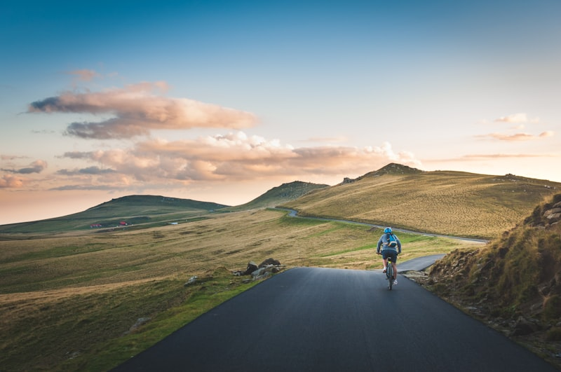

Real families, real rides, real joy

Maya was born with spastic diplegia cerebral palsy. At age 6, she'd never ridden anything with wheels on her own. Her parents looked into adaptive trikes but the $3,800 price tag, not covered by insurance, was impossible.
Through Pedals of Hope, Maya was matched with a Rifton adaptive trike with full trunk support and foot straps. The fitting specialist adjusted everything to her body perfectly.
"The first time she pedaled on her own, she screamed 'I'M DOING IT!' and didn't stop for 20 minutes," her mom Sarah recalls. "Her brother was riding next to her the whole time. That's all she ever wanted, to ride with him."
Today, Maya rides three times a week. Her therapist reports improved core strength, better coordination, and most importantly, a confidence boost that carries into everything she does.
Every bike has a story. Here are a few of them.
Jayden uses a wheelchair full-time but always wanted to bike with his neighborhood friends. His hand cycle lets him keep up on the greenway trail every Saturday morning. "He's the fastest one out there now," his dad says.
Hand CycleSofia needed extra support and a lower center of gravity. Her adaptive trike with a wide base and lateral supports gave her the stability to ride independently for the first time. She now rides to the park with her older sister every afternoon.
Adaptive TrikeAs Ethan's condition progressed, his standard bike became unsafe. A power-assist trike with custom seating lets him keep riding even as his strength changes. "Riding is the one thing that makes him feel like himself," his mom shares.
Power-AssistLily was born blind but loves speed and wind in her hair. A tandem bike with her dad as pilot lets her experience the thrill of riding. "She leans into the turns and laughs the whole time. It's her favorite thing in the world."
Tandem BikeMarcus struggled with balance and coordination on a standard bike. His adaptive bike with training supports and a calming weighted seat helped him learn at his own pace. After three months, he was riding without supports.
Adaptive BikeA car accident at age 11 left Ava a paraplegic. She thought biking was over forever. Her recumbent hand cycle proved her wrong. She's now training for an adaptive cycling event and mentors younger riders in the program.
Hand Cycle"We applied expecting a long wait and lots of paperwork. Instead, we got a phone call within a week, and our son had his bike in five weeks. The whole experience was incredible."The Rodriguez Family, Texas
"My daughter's therapist suggested Pedals of Hope. I'm so glad she did. Watching my girl ride a bike, something I never thought I'd see, was the best day of my life."Michelle K., Ohio
"The follow-up care is what sets them apart. They didn't just send a bike and disappear. They checked in, made adjustments, and genuinely cared about our son's progress."James & Priya N., California